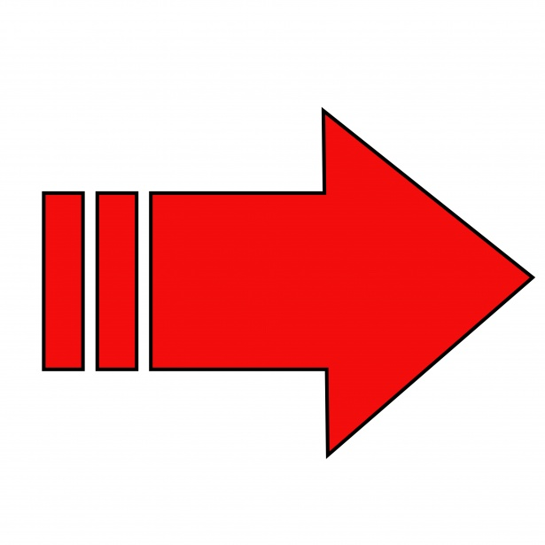
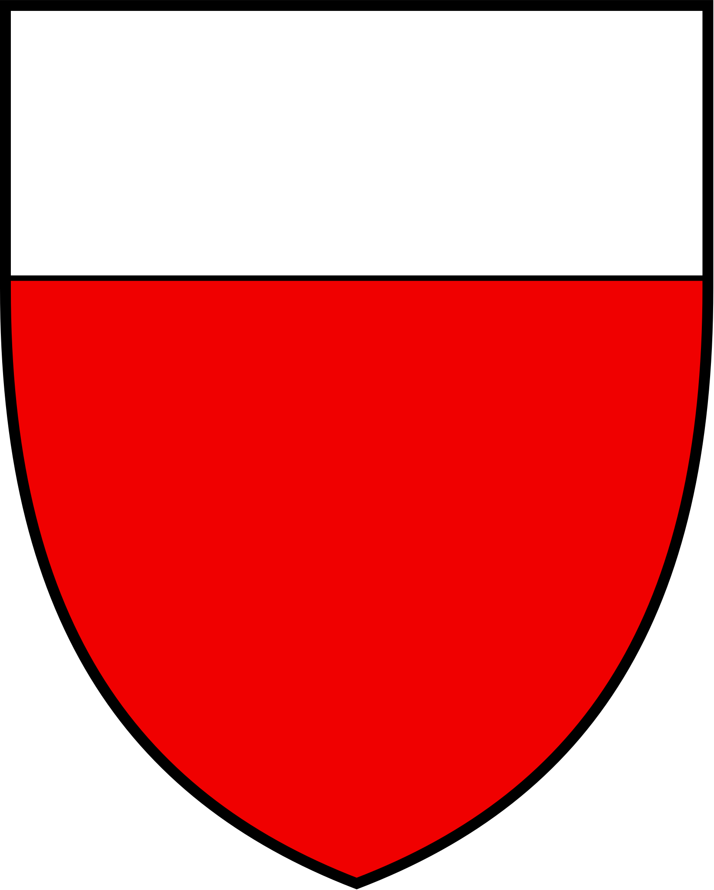

Lausanne est une ville en suisse romande. Elle se situe dans le canton de Vaud, sur la rive nord du lac Léman. C'est la capitale vaudoise et notamment la capitale olympique. Ses armoiries sont rouges et blanches.
 Elle a été fondée sous le nom de Lousonna au 15 av. J.-C. par les Romains. À cette époque, elle était centrée au bord du lac, actuellement nommé Vidy. Puis au fil des siècles, la ville s'est agrandie. Elle est passée du bord du lac à un peu plus loin dans la colline. Cela lui permet de plus facilement se protéger. Au Moyen-Âge, Lausanne était une ville fortifiée et un centre religieux important. Plus tard, Lausanne a continué à se développer en tant que centre économique et culturel. Elle est devenue un important centre universitaire, accueillant des institutions renommées telles que l'Université de Lausanne (UNIL) et l'EPFL. La ville a également acceuilli de nombreux événements sportifs internationaux, notamment les Jeux olympiques de la Jeunesse en 2020. Aujourd'hui, Lausanne est une ville dynamique et cosmopolite, alliant harmonieusement son riche patrimoine historique à une modernité vibrante. Les visiteurs peuvent explorer les ruelles médiévales, visiter les musées et galeries d'art, profiter des vues panoramiques sur le lac Léman et les Alpes, et se plonger dans la vie culturelle animée de la ville.
Il y a différentes manières possibles:
Premièrement, la ville est accessible en voiture. En effet, l'autoroute passe à côté, il est donc facile d'accéder à sa périphérie. Pour, entrer dans le centre ville c'est une autre histoire. Ce n'est pas toujours facile, car il y a des embouteillages, comme dans chaque ville, et il faut encore trouver une place de parking. Il y a différents endroits où parker sa voiture:
Deuxièmement, la ville est accessible en tranport public. C'est vraiment un avantage, parce qu'elle est très bien desservie. Depuis n'importe quelle autre ville il est possible de prendre le train et d'arriver à la gare. Ensuite, il suffit de faire un arrêt en métro (m2) et on est au centre ville. De plus, il y a le réseau des bus TL qui passe à peu près partout. L'autre métro, le m1 se dirige plus vers l'ouest au bord du lac. Par ailleurs, les horaires des transports publics sont à vérifier.
Troisièmement, la ville est accessible à pied. Il faut savoir que ce n'est pas très plat. Il y a souvent du relief mais c'est une belle occasion de découvrir la ville sous un autre aspect.